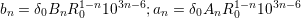
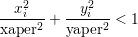
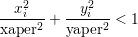

3.3 Special Elements
One advantage of SixTrack, that has been adopted from RACETRACK, is that it easily allows to define
elements for a specific purpose. The special elements implemented till now are found in this
section.
3.3.1 Multipole Coefficients
Description
Sets of normal and skew multipoles of up to tenth order, each with an r.m.s. value, can be combined with
this block. The multipole kick is calculated using a Horner scheme which saves considerably in computation
time. Moreover, using the multipole block reduces the number of elements in the single element list
( 3.2.1).
Keyword MULT
Number of data lines 2 to 12
Format
- first data line: name R0 δ0
- data lines 2 to 12: Bn r.m.s.–Bn An r.m.s.–An
-
name
- Name of the multipole block which must appear in the list of single elements ( 3.2.1.3).
-
R0
- Reference radius (in mm) at which the magnet errors are calculated. This makes it convenient to
use values from field measurements.
-
δ0
- Bending strength of the dipole (in mrad). Field errors of line 2–11 are taken to be relative to the
bending strength.
Remarks
- The Bn and An are related to the bn,an of the single nonlinear element ( 3.2.1.2) in the following
way:

- The sign convention and the factorial (n!) are treated as for the single nonlinear elements in
( 3.2.1.2).
- Multipoles of different names can be set to be equal using the “ORG” input block.
- 22–poles are included (n = 11). By enlarging the parameter “MMUL”(Appendix B.2) up to
40–poles (MMUL=20) can be treated. To make the change of MMUL effective, it is of course
necessary to recompile the program.
3.3.2 Aperture Limitations
Description This input data block is used to introduce additional collimators or aperture limitations in
the machine. Each nonlinear element can be used for this purpose. Rectangular or elliptical shapes of the
aperture limitations are allowed. On top of that there is a general (rectangular) aperture check at each
non–zero length element. The general aperture values are chosen to be large enough ( B.1) to define the
short–term dynamic aperture.
Keyword LIMI
Number of data lines variable
Format name type–of–limitation xaper yaper
-
name
- The name of any nonlinear (zero length) element in the Single Element input block ( 3.2.1.2)
except multipole blocks ( 3.2.1.3).
-
type–of–limitation
- Two types of aperture limitations are allowed:
“RE” for a rectangular aperture shape, i.e.
 “EL” for an elliptical aperture shape, i.e.

“EL” for an elliptical aperture shape, i.e.

-
- xaper Aperture in the horizontal plane in mm
-
- yaper Aperture in the vertical plane in mm
3.3.3 Power Supply Ripple
Description If power supply ripple is to be considered this input data block can be used. A nonlinear
quadrupole is expected as a ripple element (type=2 and zero length in the single element list ( 3.2.1.2)), but
in principle other nonlinear elements are also allowed. Ripple depth, ripple frequency and starting phase of
the ripple frequency are the input parameters.
Keyword RIPP
Number of data lines variable
Format name ripple–depth ripple–frequency start–phase nrturn
-
name
- Name of the nonlinear element in the “single element” block ( 3.2.1.2)
-
ripple–depth
- Maximum kick strength of the ripple element, a quadrupole kick is usually expected
-
ripple–frequency
- Given in number of turns (a real value is allowed) of one ripple period
-
start–phase
- Initial phase of the ripple element
-
nrturn
- Initial number of turns, for prolongation runs the number of turn already done
3.3.4 Beam–Beam Element
Description The beam–beam kick, including a separation of the beams, is treated à la Basetti and
Erskine [17] and implemented as in MAD [21]. However, a much faster but nevertheless precise calculation
using interpolation can be used [22]. For SixTrack version 3 the beam–beam is also available in the 6D form
à la Hirata [18]. Lastly, the linear coupling has been considered in 4 and 6 dimensional phase
space [19].
Keyword BEAM
Number of data lines variable but at least one
Format
- first data line: partnum emitnx emitny sigz sige ibeco ibtyp lhc ibbc
- other data lines: name ibsix xang xplane
-
partnum
- (float) Number of particles in bunch
-
emitnx,emitny
- (floats) Horizontal and vertical normalized emittance respectively [μm ⋅ rad]
-
sigz,sige
- (floats) R.m.s. bunch length [m] and r.m.s. energy spread
-
ibeco
- (integer) Switch (0 = off; 1 = on) to subtract the closed orbit introduced by the separation of
the beams. It is recommended to always subtract it as it is not yet calculated in a selfconsistent
manner.
-
ibtyp
- (integer) Switch (0 = off; 1 = on) to use the fast beam–beam algorithms developped in
collaboration with G.A. Erskine and E. McIntosh. The linear optics are calculated with “exact”
beam–beam kicks.
-
lhc
- For the LHC with its anti–symmetric IR the separation of the beams in one plane can be calculated
by the β–function of the other plane. For flat beams (not anti-symmetric optics) the separation
can be loaded from the fort.2 file. (0 = off; 1 = anti-symmetric; 2 = load from file).
-
ibbc
- Linear coupling considered in 4D and 6D (0 = off; 1 = on).
-
name
- Name of 6D beam–beam element. Beam–beam elements that do not appear will be treated as
4D kicks.
-
ibsix
- (integer) Number of slices of the 6D beam–beam kick. If ibsix is set to 0 this element is treated
as a 4D element.
-
xang
- (float) Half crossing angle at this particular element [rad].
-
xplane
- (float) Crossing plane angle [rad].
Remark These beam–beam elements have beam–beam have to appear in the single element list
( 3.2.1.2) (type 20) together with their horizontal and vertical beam–beam separations (see 3.2.1.5).
3.3.5 “Phase Trombone” Element
Description The linear “phase trombone” allows to introduce a change in the tranverse phases without
spoiling the linear optics of the rest of the machine, i.e. the Twiss parameters are the same at entrance and
exit of the element.
Keyword TROM
Number of data lines 1 line with name and then in blocks of 14 lines with 3 entries each
Format
- first data line: name
- second data line: cx, cx′, cy
- third data line: cy′, cz, cz′
- fourth till 15th M(6 × 6) matrix
-
name
- May contain up to sixteen characters
-
cx, cx′, cy, cy′, cz, cz′
- (floats) 6D closed orbit to be added to the coordinates.
-
M(6 × 6)
- (floats) 6 × 6 matrix elements
Remark The user has to make sure that the above stated conditions are fulfilled. When using the
mad_ 6t [15] converter from MAD8 to SixTrack this is guaranteed to be the case. Note also that the
crossterms between the transverse plains are not considered for the time being.